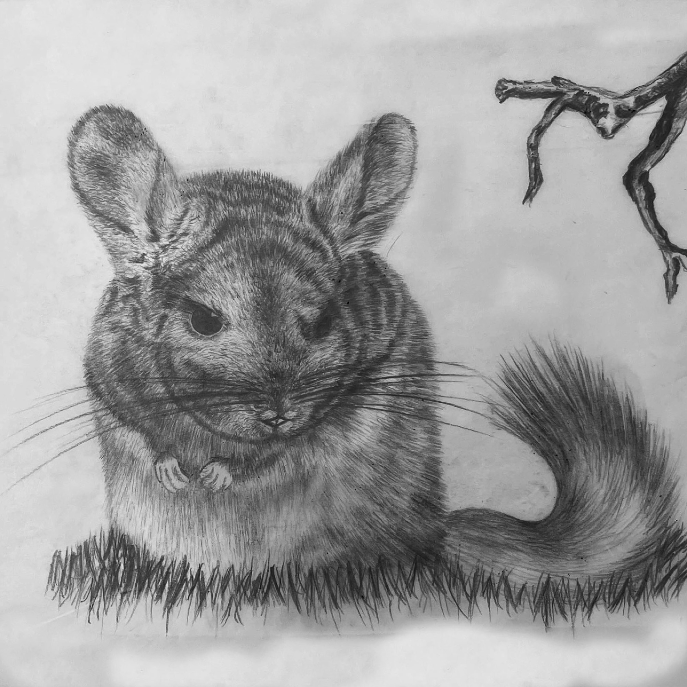
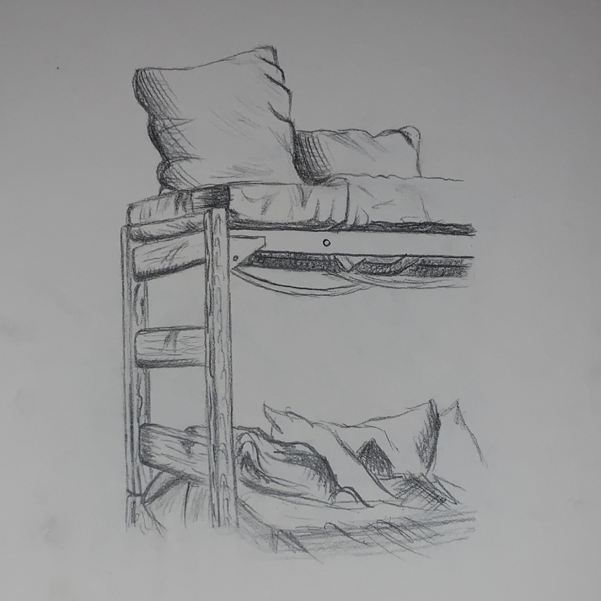
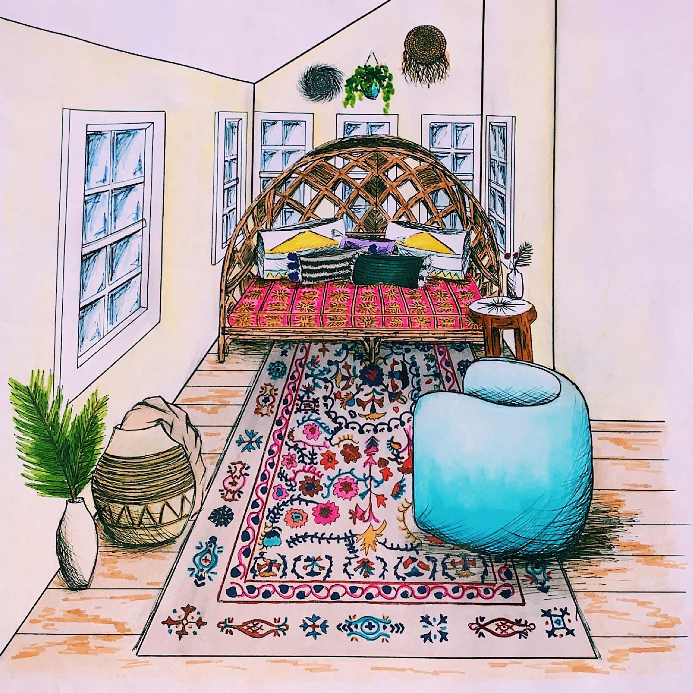

Sketch Work



This project entails the creation of an interior design sketchbook where a series of sketches and concepts will be meticulously logged and developed over time to monitor the progress of a comprehensive interior design endeavor. Through these sketches, we will explore spatial arrangements, furniture layouts, material palettes, and decorative elements, capturing the evolution of design ideas from initial inspiration to refined concepts. This process will not only serve as a visual diary of the creative journey but also as a tool for reflection and refinement, ultimately culminating in a well-documented and visually engaging record of the interior design project's evolution and the designer's creative process.